2025 National 5 Computing Science questions
Source: Scottish Qualifications Authority (SQA) / Qualifications Scotland. This is a StemInteract HTML companion, not an official HTML edition. Selectable text is supplied alongside original page images. Use the images or original PDF for equations, powers, fractions, vector notation, tables and diagrams; text extraction cannot fully preserve mathematical layout.
Jump to a question
PDF page 1
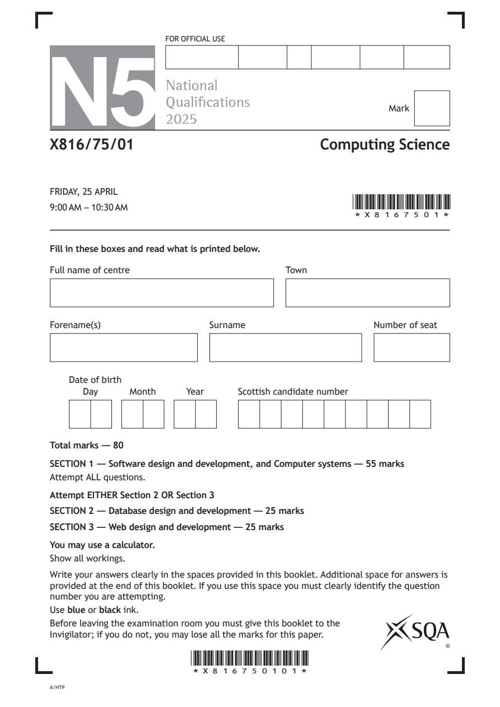
Selectable page text
FOR OFFICIAL USE
N5
National
Qualications
Mark
2025
X816/75/01 Computing Science
FRIDAY, 25 APRIL
9:00 AM – 10:30 AM
*X8167501*
Fill in these boxes and read what is printed below.
Full name of centre Town
Forename(s) Surname Number of seat
Date of birth
Day Month Year Scottish candidate number
Total marks — 80
SECTION 1 — Software design and development, and Computer systems — 55 marks
Attempt ALL questions.
Attempt EITHER Section 2 OR Section 3
SECTION 2 — Database design and development — 25 marks
SECTION 3 — Web design and development — 25 marks
You may use a calculator.
Show all workings.
Write your answers clearly in the spaces provided in this booklet. Additional space for answers is
provided at the end of this booklet. If you use this space you must clearly identify the question
number you are attempting.
Use blue or black ink.
Before leaving the examination room you must give this booklet to the
Invigilator; if you do not, you may lose all the marks for this paper.
©
*X816750101*
A/HTPPDF page 2
Question 1Question 2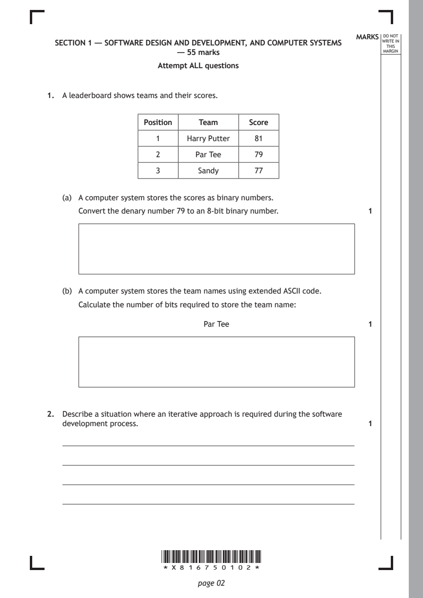
Selectable page text
MARKS DO NOT
SECTION 1 — SOFTWARE DESIGN AND DEVELOPMENT, AND COMPUTER SYSTEMS WRITE IN
THIS
— 55 marks MARGIN
Attempt ALL questions
1. A leaderboard shows teams and their scores.
Position Team Score
1 Harry Putter 81
2 Par Tee 79
3 Sandy 77
(a) A computer system stores the scores as binary numbers.
Convert the denary number 79 to an 8‑bit binary number. 1
(b) A computer system stores the team names using extended ASCII code.
Calculate the number of bits required to store the team name:
Par Tee 1
2. Describe a situation where an iterative approach is required during the software
development process. 1
*X816750102*
page 02PDF page 3
Question 3Question 4Question 5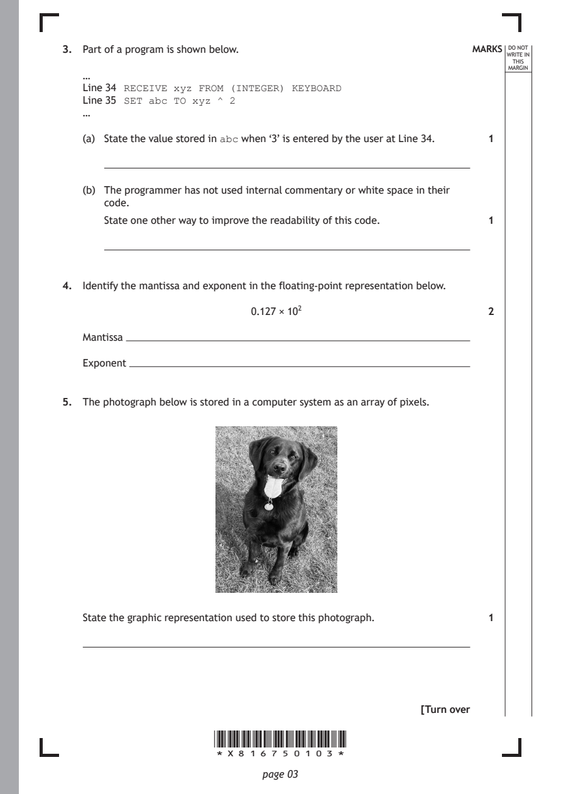
Selectable page text
3. Part of a program is shown below. MARKS DO NOT
WRITE IN
THIS
MARGIN
…
Line 34
RECEIVE xyz FROM (INTEGER) KEYBOARD
Line 35
SET abc TO xyz ^ 2
…
(a) State the value stored in when ‘3’ is entered by the user at Line 34. 1
abc
(b) The programmer has not used internal commentary or white space in their
code.
State one other way to improve the readability of this code. 1
4. Identify the mantissa and exponent in the floating‑point representation below.
0.127 × 102 2
Mantissa
Exponent
5. The photograph below is stored in a computer system as an array of pixels.
State the graphic representation used to store this photograph. 1
[Turn over
*X816750103*
page 03PDF page 4
Question 6Question 7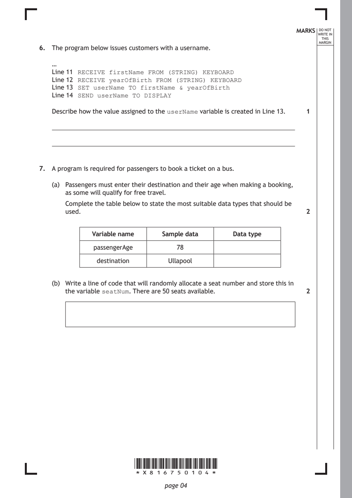
Selectable page text
MARKS DO NOT
WRITE IN
THIS
MARGIN
6. The program below issues customers with a username.
…
Line 11
RECEIVE firstName FROM (STRING) KEYBOARD
Line 12
RECEIVE yearOfBirth FROM (STRING) KEYBOARD
Line 13
SET userName TO firstName & yearOfBirth
Line 14
SEND userName TO DISPLAY
Describe how the value assigned to the variable is created in Line 13. 1
userName
7. A program is required for passengers to book a ticket on a bus.
(a) Passengers must enter their destination and their age when making a booking,
as some will qualify for free travel.
Complete the table below to state the most suitable data types that should be
used. 2
Variable name Sample data Data type
passengerAge 78
destination Ullapool
(b) Write a line of code that will randomly allocate a seat number and store this in
the variable . There are 50 seats available. 2
seatNum
*X816750104*
page 04PDF page 5
Question 8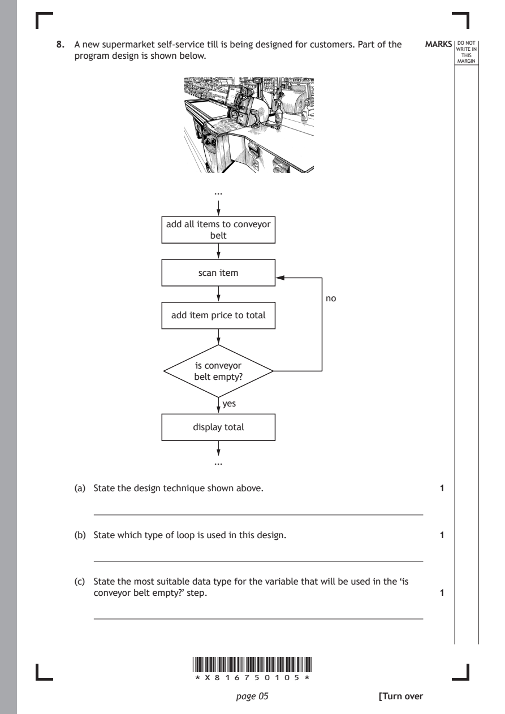
Selectable page text
8. A new supermarket self‑service till is being designed for customers. Part of the MARKS DO NOT
WRITE IN
program design is shown below. THIS
MARGIN
...
add all items to conveyor
belt
scan item
no
add item price to total
is conveyor
belt empty?
yes
display total
...
(a) State the design technique shown above. 1
(b) State which type of loop is used in this design. 1
(c) State the most suitable data type for the variable that will be used in the ‘is
conveyor belt empty?’ step. 1
*X816750105*
page 05 [Turn overPDF page 6
Question 9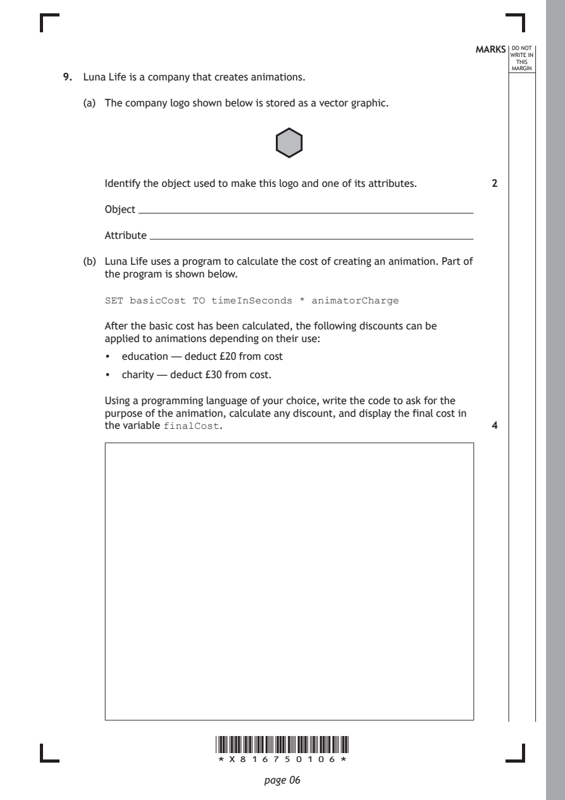
Selectable page text
MARKS DO NOT
WRITE IN
THIS
MARGIN
9. Luna Life is a company that creates animations.
(a) The company logo shown below is stored as a vector graphic.
Identify the object used to make this logo and one of its attributes. 2
Object
Attribute
(b) Luna Life uses a program to calculate the cost of creating an animation. Part of
the program is shown below.
SET basicCost TO timeInSeconds * animatorCharge
After the basic cost has been calculated, the following discounts can be
applied to animations depending on their use:
• education — deduct £20 from cost
• charity — deduct £30 from cost.
Using a programming language of your choice, write the code to ask for the
purpose of the animation, calculate any discount, and display the final cost in
the variable . 4
finalCost
*X816750106*
page 06PDF page 7
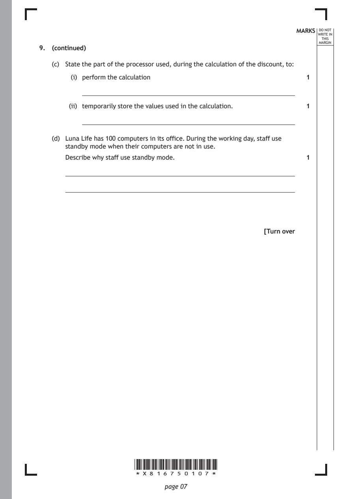
Selectable page text
MARKS DO NOT
WRITE IN
THIS
MARGIN
9. (continued)
(c) State the part of the processor used, during the calculation of the discount, to:
(i) perform the calculation 1
(ii) temporarily store the values used in the calculation. 1
(d) Luna Life has 100 computers in its office. During the working day, staff use
standby mode when their computers are not in use.
Describe why staff use standby mode. 1
[Turn over
*X816750107*
page 07PDF page 8
Question 10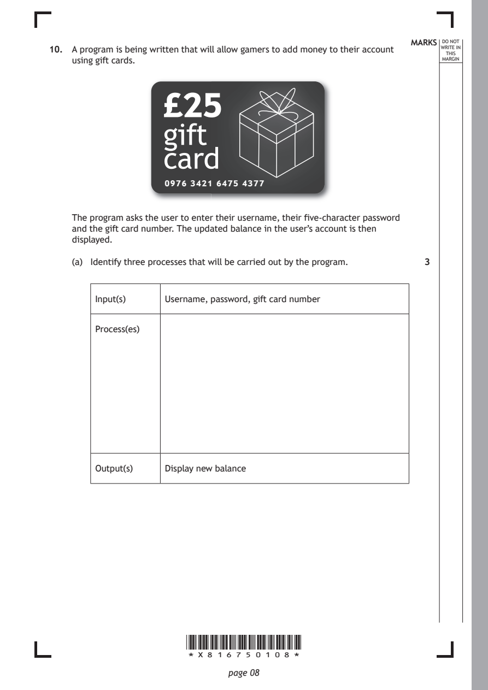
Selectable page text
MARKS DO NOT
10. A program is being written that will allow gamers to add money to their account WRITE IN
THIS
using gift cards. MARGIN
£25
gift
card
0976 3421 6475 4377
The program asks the user to enter their username, their five‑character password
and the gift card number. The updated balance in the user’s account is then
displayed.
(a) Identify three processes that will be carried out by the program. 3
Input(s) Username, password, gift card number
Process(es)
Output(s) Display new balance
*X816750108*
page 08PDF page 9
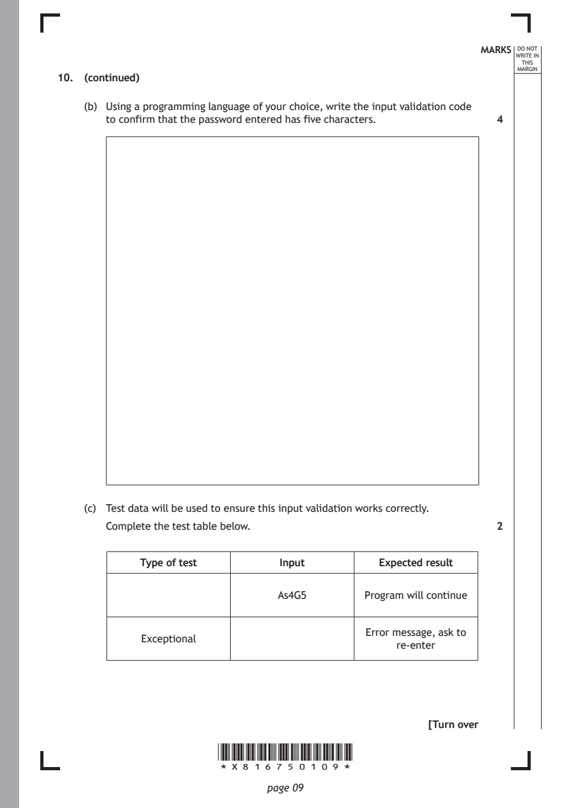
Selectable page text
MARKS DO NOT
WRITE IN
THIS
MARGIN
10. (continued)
(b) Using a programming language of your choice, write the input validation code
to confirm that the password entered has five characters. 4
(c) Test data will be used to ensure this input validation works correctly.
Complete the test table below. 2
Type of test Input Expected result
As4G5 Program will continue
Error message, ask to
Exceptional
re‑enter
[Turn over
*X816750109*
page 09PDF page 10
Question 11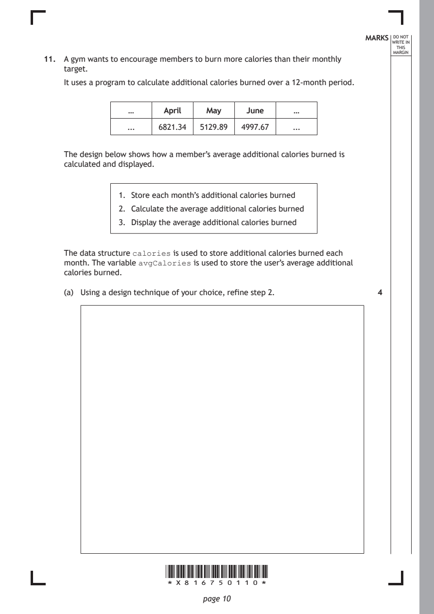
Selectable page text
MARKS DO NOT
WRITE IN
THIS
MARGIN
11. A gym wants to encourage members to burn more calories than their monthly
target.
It uses a program to calculate additional calories burned over a 12‑month period.
… April May June …
... 6821.34 5129.89 4997.67 ...
The design below shows how a member’s average additional calories burned is
calculated and displayed.
1. Store each month’s additional calories burned
2. Calculate the average additional calories burned
3. Display the average additional calories burned
The data structure is used to store additional calories burned each
calories
month. The variable is used to store the user’s average additional
avgCalories
calories burned.
(a) Using a design technique of your choice, refine step 2. 4
*X816750110*
page 10PDF page 11
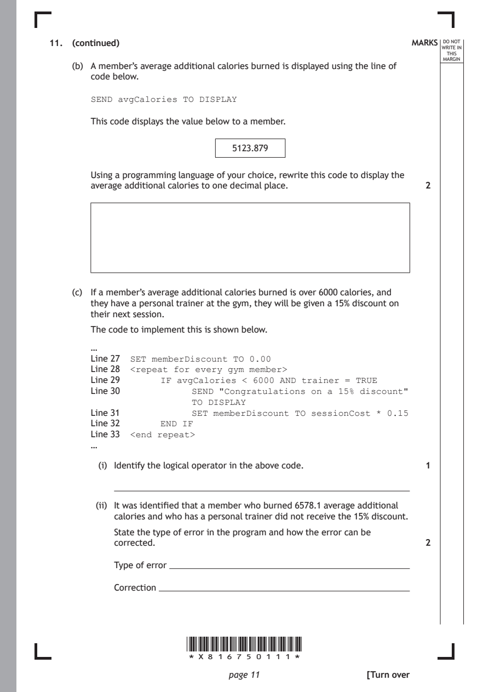
Selectable page text
11. (continued) MARKS DO NOT
WRITE IN
THIS
MARGIN
(b) A member’s average additional calories burned is displayed using the line of
code below.
SEND avgCalories TO DISPLAY
This code displays the value below to a member.
5123.879
Using a programming language of your choice, rewrite this code to display the
average additional calories to one decimal place. 2
(c) If a member’s average additional calories burned is over 6000 calories, and
they have a personal trainer at the gym, they will be given a 15% discount on
their next session.
The code to implement this is shown below.
…
Line 27
SET memberDiscount TO 0.00
Line 28
<repeat for every gym member>
Line 29
IF avgCalories < 6000 AND trainer = TRUE
Line 30
SEND "Congratulations on a 15% discount"
TO DISPLAY
Line 31
SET memberDiscount TO sessionCost * 0.15
Line 32
END IF
Line 33
<end repeat>
…
(i) Identify the logical operator in the above code. 1
(ii) It was identified that a member who burned 6578.1 average additional
calories and who has a personal trainer did not receive the 15% discount.
State the type of error in the program and how the error can be
corrected. 2
Type of error
Correction
*X816750111*
page 11 [Turn overPDF page 12
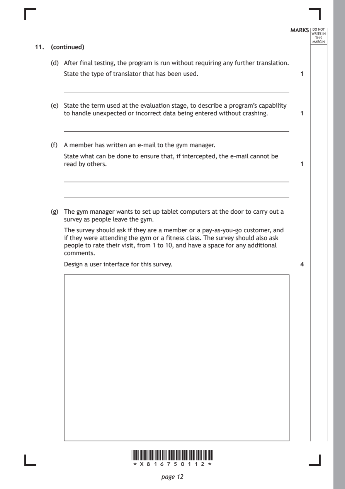
Selectable page text
MARKS DO NOT
WRITE IN
THIS
MARGIN
11. (continued)
(d) After final testing, the program is run without requiring any further translation.
State the type of translator that has been used. 1
(e) State the term used at the evaluation stage, to describe a program’s capability
to handle unexpected or incorrect data being entered without crashing. 1
(f) A member has written an e‑mail to the gym manager.
State what can be done to ensure that, if intercepted, the e‑mail cannot be
read by others. 1
(g) The gym manager wants to set up tablet computers at the door to carry out a
survey as people leave the gym.
The survey should ask if they are a member or a pay‑as‑you‑go customer, and
if they were attending the gym or a fitness class. The survey should also ask
people to rate their visit, from 1 to 10, and have a space for any additional
comments.
Design a user interface for this survey. 4
*X816750112*
page 12PDF page 13
Question 12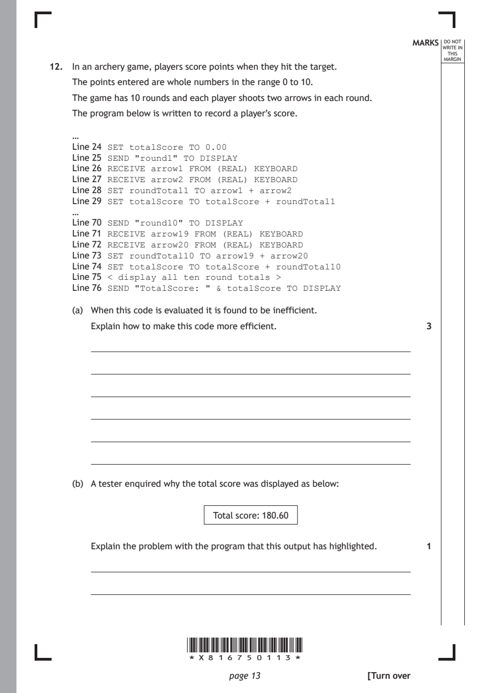
Selectable page text
MARKS DO NOT
WRITE IN
THIS
MARGIN
12. In an archery game, players score points when they hit the target.
The points entered are whole numbers in the range 0 to 10.
The game has 10 rounds and each player shoots two arrows in each round.
The program below is written to record a player’s score.
…
Line 24
SET totalScore TO 0.00
Line 25
SEND "round1" TO DISPLAY
Line 26
RECEIVE arrow1 FROM (REAL) KEYBOARD
Line 27
RECEIVE arrow2 FROM (REAL) KEYBOARD
Line 28
SET roundTotal1 TO arrow1 + arrow2
Line 29
SET totalScore TO totalScore + roundTotal1
…
Line 70
SEND "round10" TO DISPLAY
Line 71
RECEIVE arrow19 FROM (REAL) KEYBOARD
Line 72
RECEIVE arrow20 FROM (REAL) KEYBOARD
Line 73
SET roundTotal10 TO arrow19 + arrow20
Line 74
SET totalScore TO totalScore + roundTotal10
Line 75
< display all ten round totals >
Line 76
SEND "TotalScore: " & totalScore TO DISPLAY
(a) When this code is evaluated it is found to be inefficient.
Explain how to make this code more efficient. 3
(b) A tester enquired why the total score was displayed as below:
Total score: 180.60
Explain the problem with the program that this output has highlighted. 1
*X816750113*
page 13 [Turn overPDF page 14
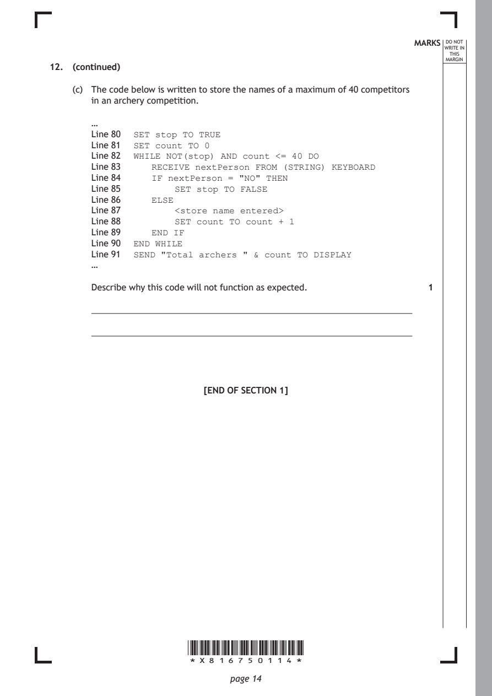
Selectable page text
MARKS DO NOT
WRITE IN
THIS
MARGIN
12. (continued)
(c) The code below is written to store the names of a maximum of 40 competitors
in an archery competition.
…
Line 80
SET stop TO TRUE
Line 81
SET count TO 0
Line 82
WHILE NOT(stop) AND count <= 40 DO
Line 83
RECEIVE nextPerson FROM (STRING) KEYBOARD
Line 84
IF nextPerson = "NO" THEN
Line 85
SET stop TO FALSE
Line 86
ELSE
Line 87
<store name entered>
Line 88
SET count TO count + 1
Line 89
END IF
Line 90
END WHILE
Line 91
SEND "Total archers " & count TO DISPLAY
…
Describe why this code will not function as expected. 1
[END OF SECTION 1]
*X816750114*
page 14PDF page 15

Selectable page text
[Turn over for SECTION 2
DO NOT WRITE ON THIS PAGE
*X816750115*
page 15PDF page 16
Question 13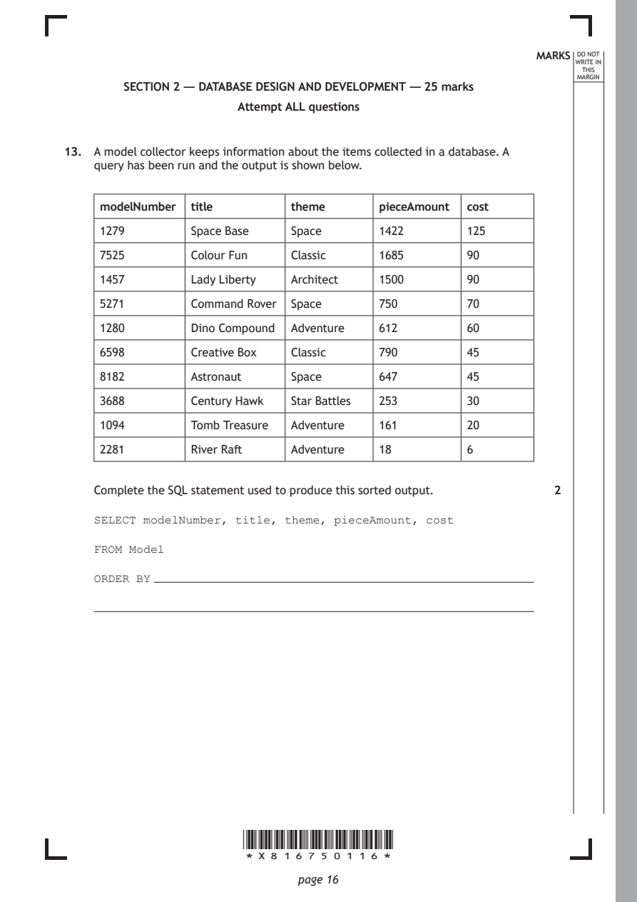
Selectable page text
MARKS DO NOT
WRITE IN
THIS
MARGIN
SECTION 2 — DATABASE DESIGN AND DEVELOPMENT — 25 marks
Attempt ALL questions
13. A model collector keeps information about the items collected in a database. A
query has been run and the output is shown below.
modelNumber title theme pieceAmount cost
1279 Space Base Space 1422 125
7525 Colour Fun Classic 1685 90
1457 Lady Liberty Architect 1500 90
5271 Command Rover Space 750 70
1280 Dino Compound Adventure 612 60
6598 Creative Box Classic 790 45
8182 Astronaut Space 647 45
3688 Century Hawk Star Battles 253 30
1094 Tomb Treasure Adventure 161 20
2281 River Raft Adventure 18 6
Complete the SQL statement used to produce this sorted output. 2
SELECT modelNumber, title, theme, pieceAmount, cost
FROM Model
ORDER BY
*X816750116*
page 16PDF page 17
Question 14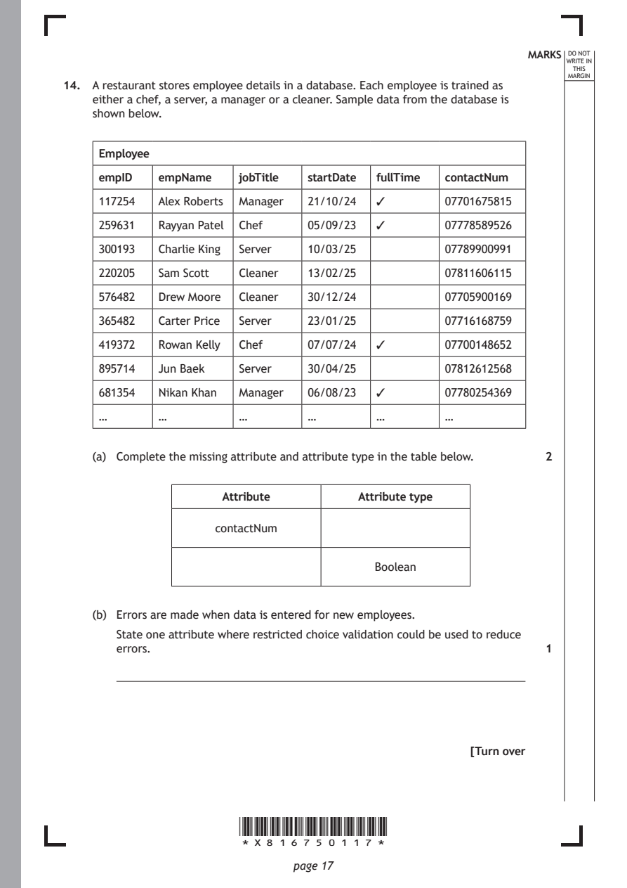
Selectable page text
MARKS DO NOT
WRITE IN
THIS
MARGIN
14. A restaurant stores employee details in a database. Each employee is trained as
either a chef, a server, a manager or a cleaner. Sample data from the database is
shown below.
Employee
empID empName jobTitle startDate fullTime contactNum
117254 Alex Roberts Manager 21/10/24 ✓ 07701675815
259631 Rayyan Patel Chef 05/09/23 ✓ 07778589526
300193 Charlie King Server 10/03/25 07789900991
220205 Sam Scott Cleaner 13/02/25 07811606115
576482 Drew Moore Cleaner 30/12/24 07705900169
365482 Carter Price Server 23/01/25 07716168759
419372 Rowan Kelly Chef 07/07/24 ✓ 07700148652
895714 Jun Baek Server 30/04/25 07812612568
681354 Nikan Khan Manager 06/08/23 ✓ 07780254369
… … … … … …
(a) Complete the missing attribute and attribute type in the table below. 2
Attribute Attribute type
contactNum
Boolean
(b) Errors are made when data is entered for new employees.
State one attribute where restricted choice validation could be used to reduce
errors. 1
[Turn over
*X816750117*
page 17PDF page 18
Question 15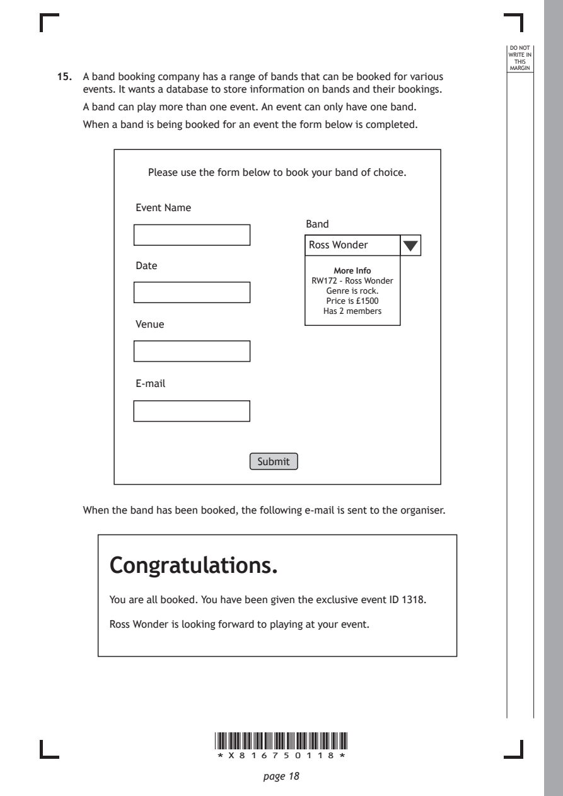
Selectable page text
DO NOT
WRITE IN
THIS
MARGIN
15. A band booking company has a range of bands that can be booked for various
events. It wants a database to store information on bands and their bookings.
A band can play more than one event. An event can only have one band.
When a band is being booked for an event the form below is completed.
Please use the form below to book your band of choice.
Event Name
Band
Ross Wonder
Date
More Info
RW172 - Ross Wonder
Genre is rock.
Price is £1500
Has 2 members
Venue
E-mail
Submit
When the band has been booked, the following e‑mail is sent to the organiser.
Congratulations.
You are all booked. You have been given the exclusive event ID 1318.
Ross Wonder is looking forward to playing at your event.
*X816750118*
page 18PDF page 19
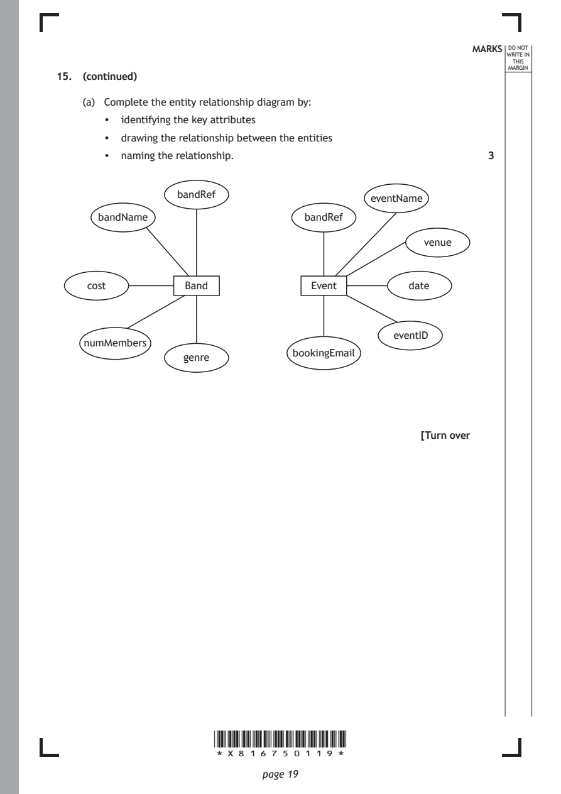
Selectable page text
MARKS DO NOT
WRITE IN
THIS
MARGIN
15. (continued)
(a) Complete the entity relationship diagram by:
• identifying the key attributes
• drawing the relationship between the entities
• naming the relationship. 3
bandRef
eventName
bandName bandRef
venue
cost Band Event date
eventID
numMembers
bookingEmail
genre
[Turn over
*X816750119*
page 19PDF page 20
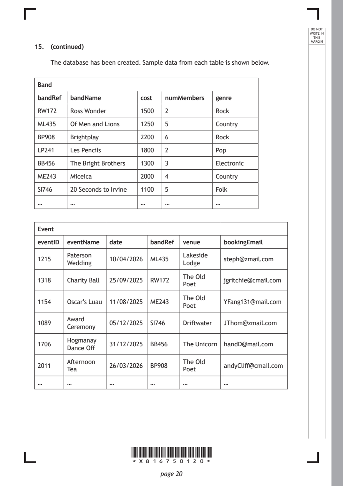
Selectable page text
DO NOT
WRITE IN
THIS
MARGIN
15. (continued)
The database has been created. Sample data from each table is shown below.
Band
bandRef bandName cost numMembers genre
RW172 Ross Wonder 1500 2 Rock
ML435 Of Men and Lions 1250 5 Country
BP908 Brightplay 2200 6 Rock
LP241 Les Pencils 1800 2 Pop
BB456 The Bright Brothers 1300 3 Electronic
ME243 Miceica 2000 4 Country
SI746 20 Seconds to Irvine 1100 5 Folk
… … … … …
Event
eventID eventName date bandRef venue bookingEmail
Paterson Lakeside
1215 10/04/2026 ML435 steph@zmail.com
Wedding Lodge
The Old
1318 Charity Ball 25/09/2025 RW172 jgritchie@cmail.com
Poet
The Old
1154 Oscar’s Luau 11/08/2025 ME243 YFang131@mail.com
Poet
Award
1089 05/12/2025 SI746 Driftwater JThom@zmail.com
Ceremony
Hogmanay
1706 31/12/2025 BB456 The Unicorn handD@mail.com
Dance Off
Afternoon The Old
2011 26/03/2026 BP908 andyCliff@cmail.com
Tea Poet
… … … … … …
*X816750120*
page 20PDF page 21
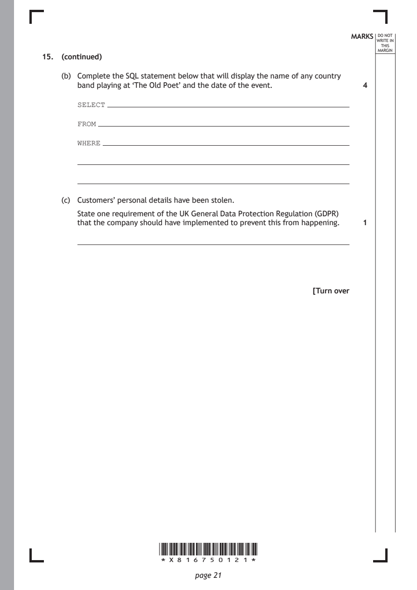
Selectable page text
MARKS DO NOT
WRITE IN
THIS
MARGIN
15. (continued)
(b) Complete the SQL statement below that will display the name of any country
band playing at ‘The Old Poet’ and the date of the event. 4
SELECT
FROM
WHERE
(c) Customers’ personal details have been stolen.
State one requirement of the UK General Data Protection Regulation (GDPR)
that the company should have implemented to prevent this from happening. 1
[Turn over
*X816750121*
page 21PDF page 22
Question 16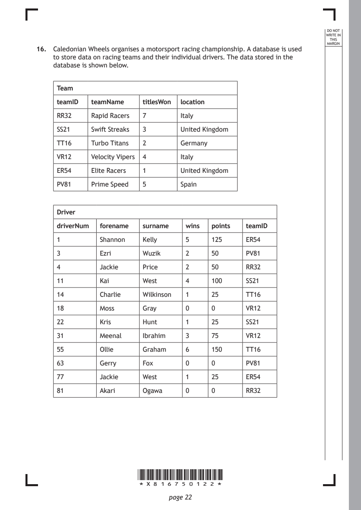
Selectable page text
DO NOT
WRITE IN
THIS
MARGIN
16. Caledonian Wheels organises a motorsport racing championship. A database is used
to store data on racing teams and their individual drivers. The data stored in the
database is shown below.
Team
teamID teamName titlesWon location
RR32 Rapid Racers 7 Italy
SS21 Swift Streaks 3 United Kingdom
TT16 Turbo Titans 2 Germany
VR12 Velocity Vipers 4 Italy
ER54 Elite Racers 1 United Kingdom
PV81 Prime Speed 5 Spain
Driver
driverNum forename surname wins points teamID
1 Shannon Kelly 5 125 ER54
3 Ezri Wuzik 2 50 PV81
4 Jackie Price 2 50 RR32
11 Kai West 4 100 SS21
14 Charlie Wilkinson 1 25 TT16
18 Moss Gray 0 0 VR12
22 Kris Hunt 1 25 SS21
31 Meenal Ibrahim 3 75 VR12
55 Ollie Graham 6 150 TT16
63 Gerry Fox 0 0 PV81
77 Jackie West 1 25 ER54
81 Akari Ogawa 0 0 RR32
*X816750122*
page 22PDF page 23
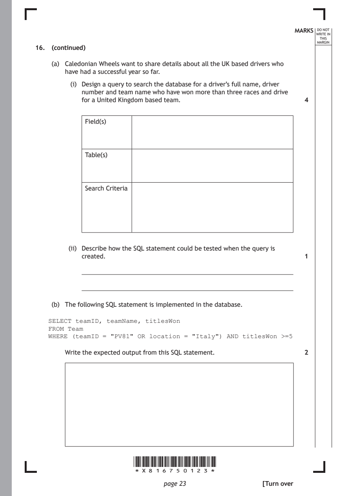
Selectable page text
MARKS DO NOT
WRITE IN
THIS
MARGIN
16. (continued)
(a) Caledonian Wheels want to share details about all the UK based drivers who
have had a successful year so far.
(i) Design a query to search the database for a driver’s full name, driver
number and team name who have won more than three races and drive
for a United Kingdom based team. 4
Field(s)
Table(s)
Search Criteria
(ii) Describe how the SQL statement could be tested when the query is
created. 1
(b) The following SQL statement is implemented in the database.
SELECT teamID, teamName, titlesWon
FROM Team
WHERE (teamID = "PV81" OR location = "Italy") AND titlesWon >=5
Write the expected output from this SQL statement. 2
*X816750123*
page 23 [Turn overPDF page 24
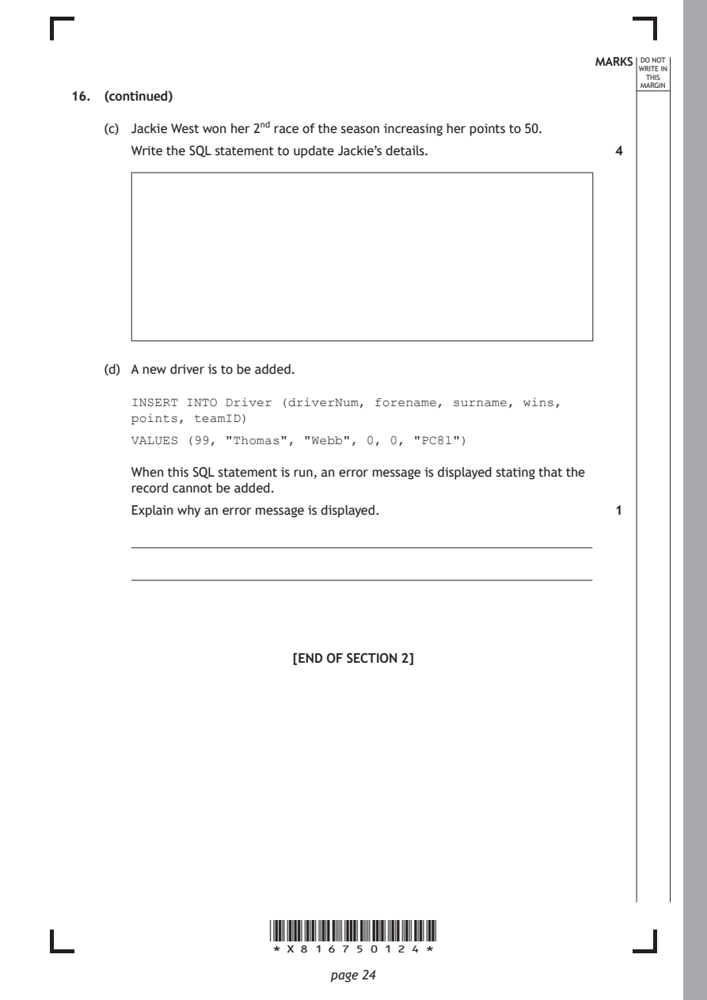
Selectable page text
MARKS DO NOT
WRITE IN
THIS
MARGIN
16. (continued)
(c) Jackie West won her 2nd race of the season increasing her points to 50.
Write the SQL statement to update Jackie’s details. 4
(d) A new driver is to be added.
INSERT INTO Driver (driverNum, forename, surname, wins,
points, teamID)
VALUES (99, "Thomas", "Webb", 0, 0, "PC81")
When this SQL statement is run, an error message is displayed stating that the
record cannot be added.
Explain why an error message is displayed. 1
[END OF SECTION 2]
*X816750124*
page 24PDF page 25
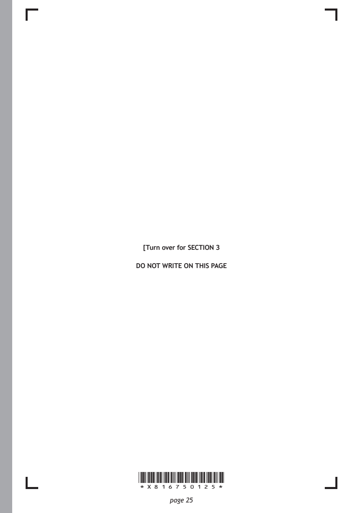
Selectable page text
[Turn over for SECTION 3
DO NOT WRITE ON THIS PAGE
*X816750125*
page 25PDF page 26
Question 17Question 18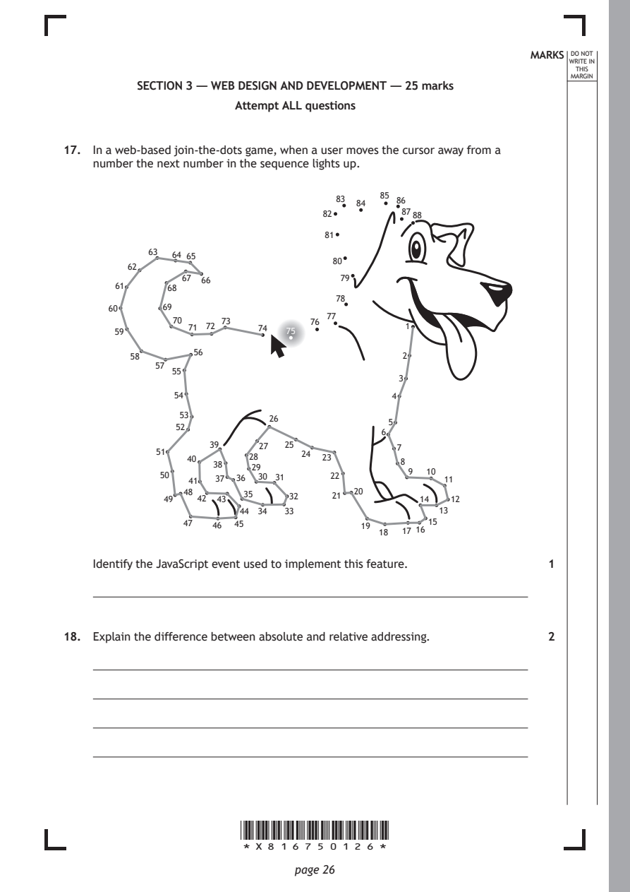
Selectable page text
MARKS DO NOT
WRITE IN
THIS
MARGIN
SECTION 3 — WEB DESIGN AND DEVELOPMENT — 25 marks
Attempt ALL questions
17. In a web‑based join‑the‑dots game, when a user moves the cursor away from a
number the next number in the sequence lights up.
85
83 84 86
82 87 88
81
63 64 65
80
62
67 66 79
61 68
78
60 69
77
70 73 76
59 71 72 74 75 1
58 56 2
57
55
3
54 4
53
26
5
52
6
39 27 25 7
51 40 28 24 23 8
38 29
9 10
50 41 37 36 30 31 22 11
49 48 42 43 35 32 21 20 14 12
44 34 33 13
47 46 45 19 15
18 17 16
Identify the JavaScript event used to implement this feature. 1
18. Explain the difference between absolute and relative addressing. 2
*X816750126*
page 26PDF page 27
Question 19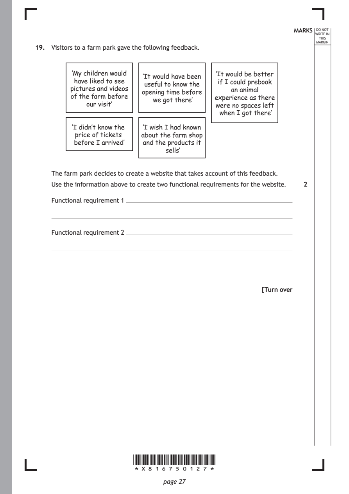
Selectable page text
MARKS DO NOT
WRITE IN
THIS
MARGIN
19. Visitors to a farm park gave the following feedback.
‘My children would ‘It would be better
‘It would have been
have liked to see if I could prebook
useful to know the
pictures and videos an animal
opening time before
of the farm before experience as there
we got there‛
our visit‛ were no spaces left
when I got there‛
‘I didn‛t know the ‘I wish I had known
price of tickets about the farm shop
before I arrived‛ and the products it
sells‛
The farm park decides to create a website that takes account of this feedback.
Use the information above to create two functional requirements for the website. 2
Functional requirement 1
Functional requirement 2
[Turn over
*X816750127*
page 27PDF page 28
Question 20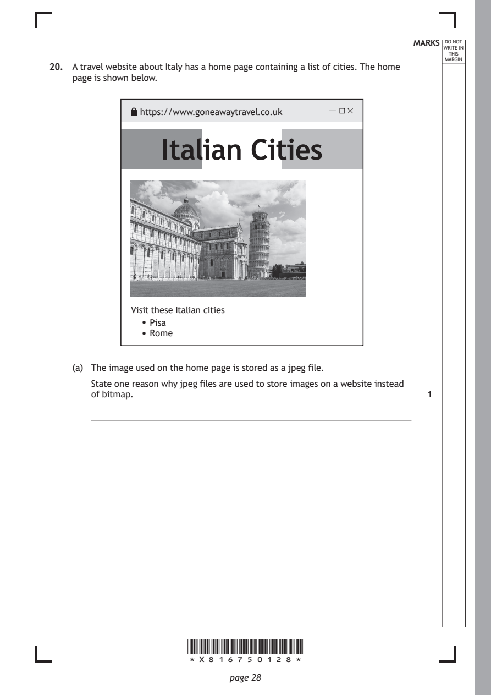
Selectable page text
MARKS DO NOT
WRITE IN
THIS
MARGIN
20. A travel website about Italy has a home page containing a list of cities. The home
page is shown below.
https://www.goneawaytravel.co.uk
Italian Cities
Vis.it these Italian cities
. Pisa
Rome
(a) The image used on the home page is stored as a jpeg file.
State one reason why jpeg files are used to store images on a website instead
of bitmap. 1
*X816750128*
page 28PDF page 29
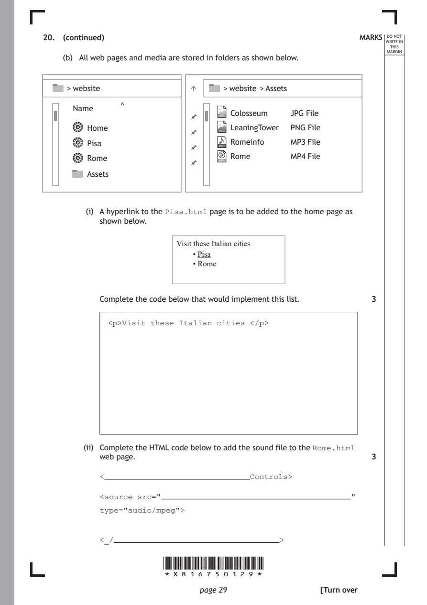
Selectable page text
20. (continued) MARKS DO NOT
WRITE IN
THIS
MARGIN
(b) All web pages and media are stored in folders as shown below.
>website website
Name
Colosseum JPG File
JPG
Home LeaningTower PNG File
PNG
Pisa Romeinfo MP3 File
MP3
Rome Rome MP4 File
MP4
Assets
*X816750129*
page 29
>
> >Assets
(i) A hyperlink to the page is to be added to the home page as
Pisa.html
shown below.
Visit these Italian cities
• Pisa
• Rome
Complete the code below that would implement this list. 3
<p>Visit these Italian cities </p>
(ii) Complete the HTML code below to add the sound file to the
Rome.html
web page. 3
������������������������������������������������������������������
< Controls>
��������������������������������������������������������������������������������������
<source src=" "
type="audio/mpeg">
���������������������������������������������������������������������������
<_/ >
[Turn overPDF page 30
Question 21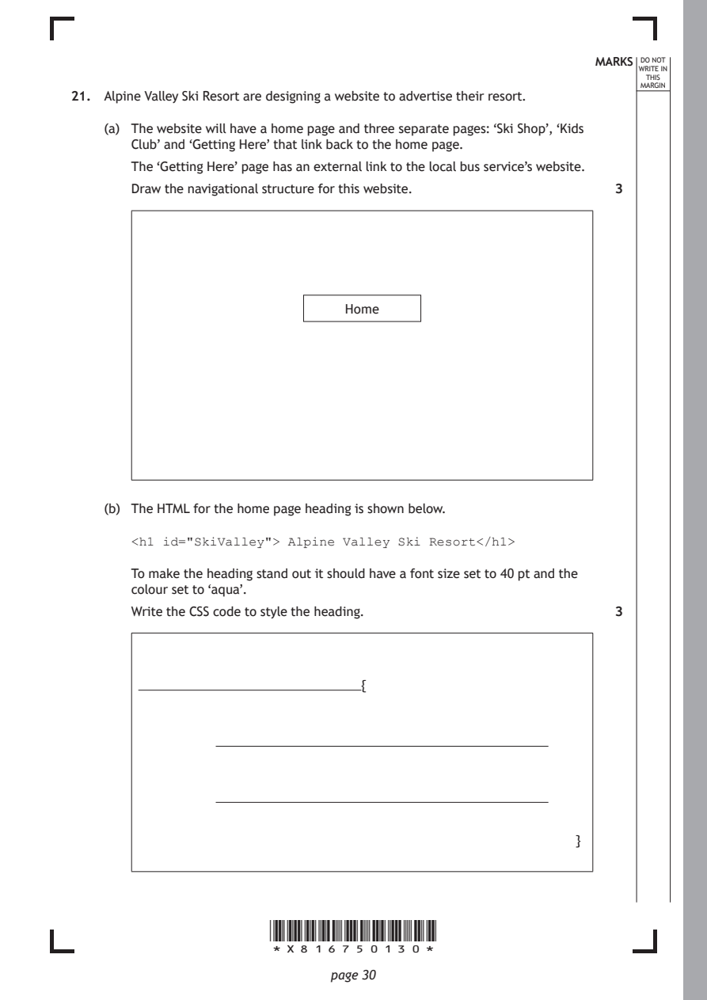
Selectable page text
MARKS DO NOT
WRITE IN
THIS
MARGIN
21. Alpine Valley Ski Resort are designing a website to advertise their resort.
(a) The website will have a home page and three separate pages: ‘Ski Shop’, ‘Kids
Club’ and ‘Getting Here’ that link back to the home page.
The ‘Getting Here’ page has an external link to the local bus service’s website.
Draw the navigational structure for this website. 3
Home
(b) The HTML for the home page heading is shown below.
<h1 id="SkiValley"> Alpine Valley Ski Resort</h1>
To make the heading stand out it should have a font size set to 40 pt and the
colour set to ‘aqua’.
Write the CSS code to style the heading. 3
�������������������������������������������������������������{
�������������������������������������������������������������������������������������������
�������������������������������������������������������������������������������������������
}
*X816750130*
page 30PDF page 31
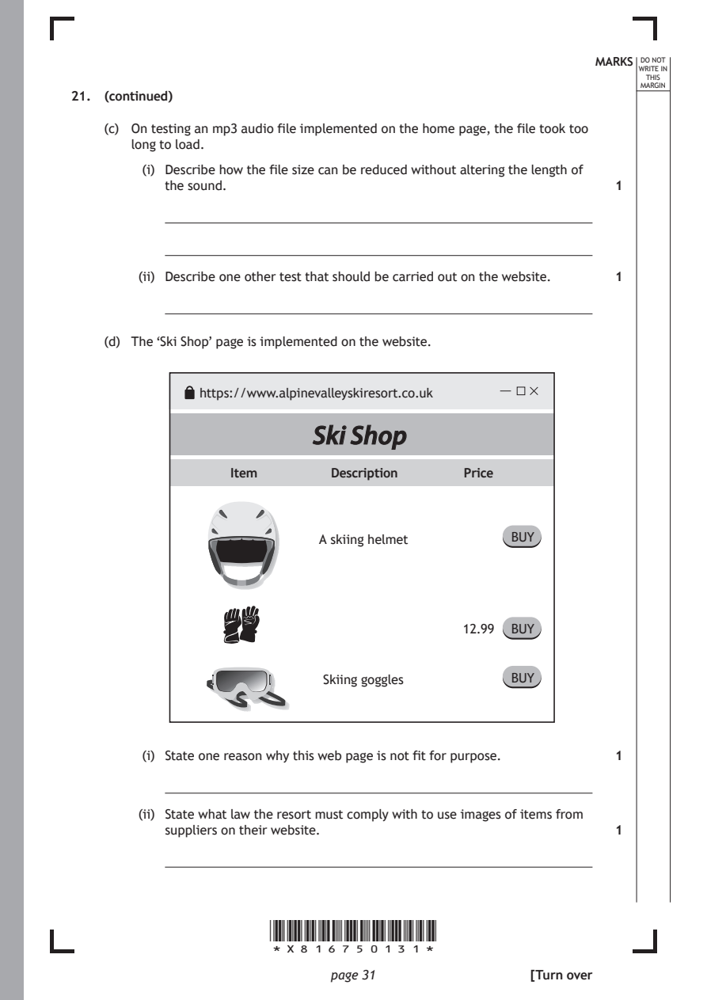
Selectable page text
MARKS DO NOT
WRITE IN
THIS
MARGIN
21. (continued)
(c) On testing an mp3 audio file implemented on the home page, the file took too
long to load.
(i) Describe how the file size can be reduced without altering the length of
the sound. 1
(ii) Describe one other test that should be carried out on the website. 1
(d) The ‘Ski Shop’ page is implemented on the website.
https://www.alpinevalleyskiresort.co.uk
Ski Shop
Item Description Price
A skiing helmet BUY
12.99 BUY
Skiing goggles BUY
(i) State one reason why this web page is not fit for purpose. 1
(ii) State what law the resort must comply with to use images of items from
suppliers on their website. 1
*X816750131*
page 31 [Turn overPDF page 32
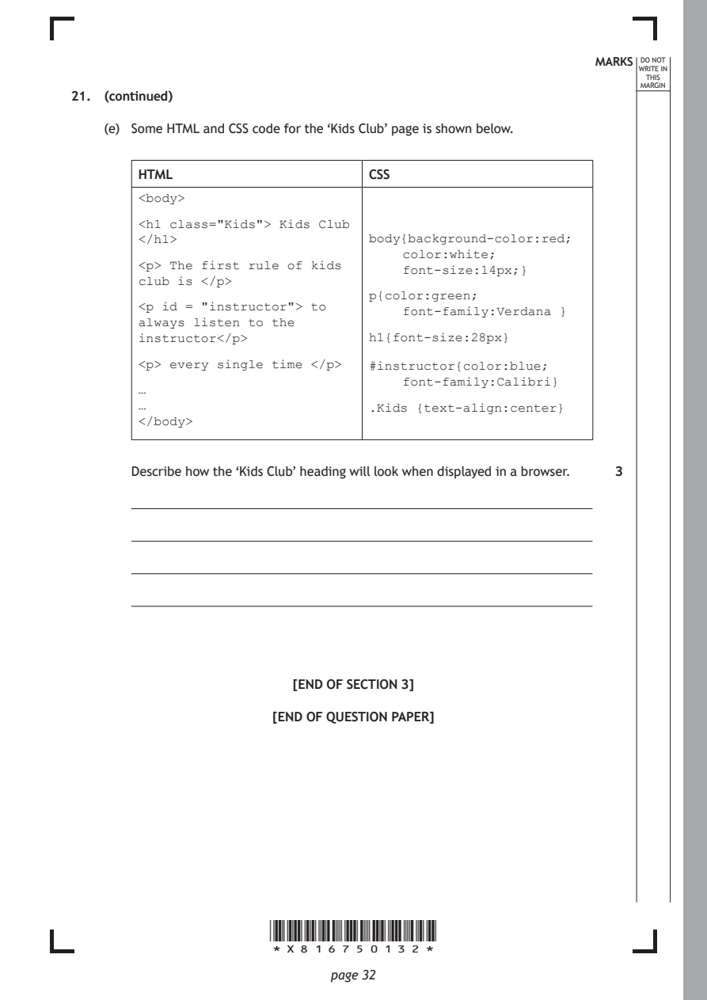
Selectable page text
MARKS DO NOT
WRITE IN
THIS
MARGIN
21. (continued)
(e) Some HTML and CSS code for the ‘Kids Club’ page is shown below.
HTML CSS
<body>
<h1 class="Kids"> Kids Club
</h1> body{background-color:red;
color:white;
<p> The first rule of kids
font-size:14px;}
club is </p>
p{color:green;
<p id = "instructor"> to
font-family:Verdana }
always listen to the
instructor</p> h1{font-size:28px}
<p> every single time </p> #instructor{color:blue;
font-family:Calibri}
…
… .Kids {text-align:center}
</body>
Describe how the ‘Kids Club’ heading will look when displayed in a browser. 3
[END OF SECTION 3]
[END OF QUESTION PAPER]
*X816750132*
page 32PDF page 33
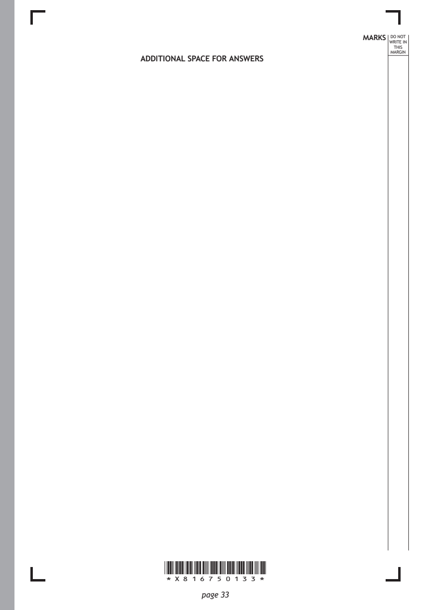
Selectable page text
MARKS DO NOT
WRITE IN
THIS
MARGIN
ADDITIONAL SPACE FOR ANSWERS
*X816750133*
page 33PDF page 34
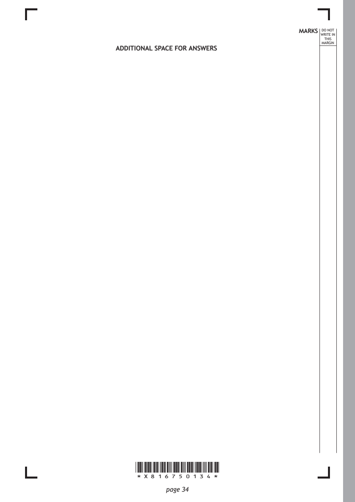
Selectable page text
MARKS DO NOT
WRITE IN
THIS
MARGIN
ADDITIONAL SPACE FOR ANSWERS
*X816750134*
page 34PDF page 35

Selectable page text
[BLANK PAGE]
DO NOT WRITE ON THIS PAGE
*X816750135*
page 35PDF page 36
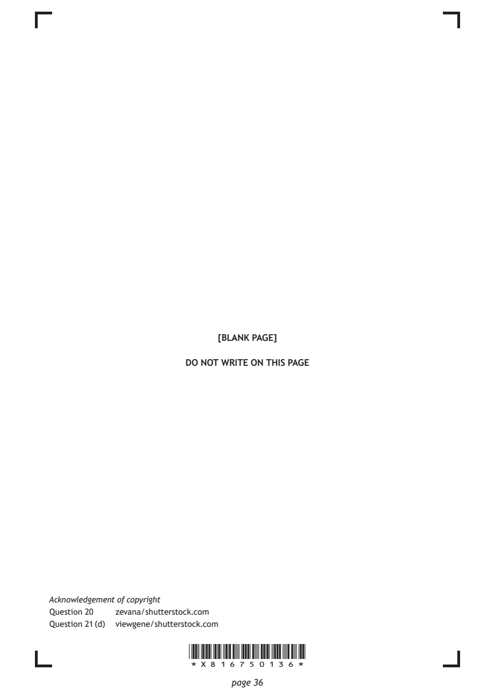
Selectable page text
[BLANK PAGE]
DO NOT WRITE ON THIS PAGE
Acknowledgement of copyright
Question 20 zevana/shutterstock.com
Question 21 (d) viewgene/shutterstock.com
*X816750136*
page 36